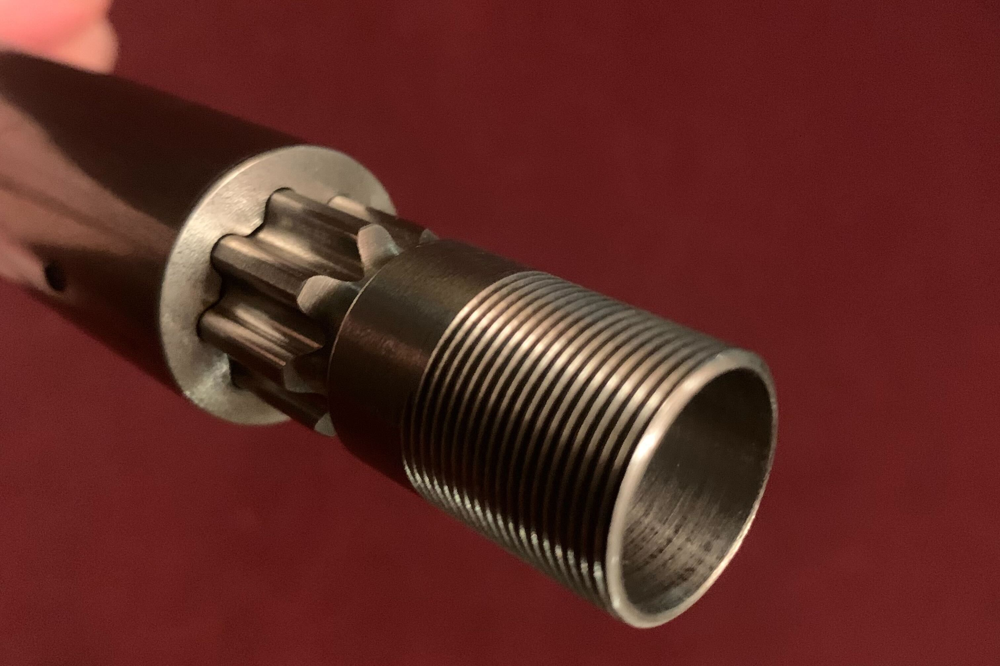
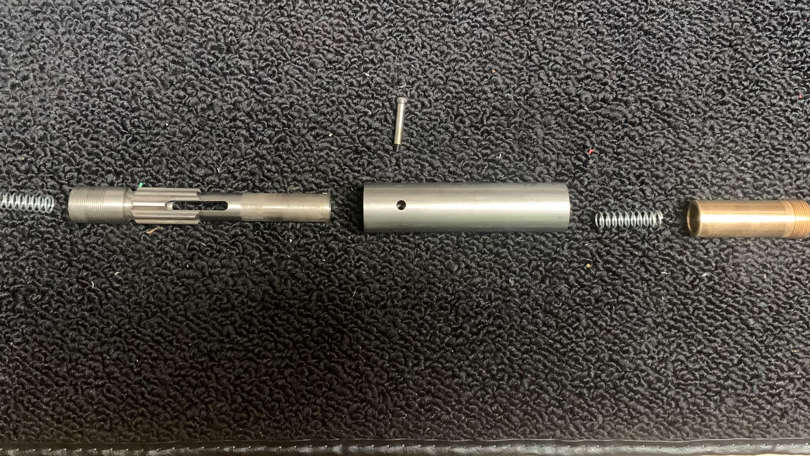

Floating Tap Holder
A spring-loaded tap holder to enable tapping cycles on old CNC Machines

Our CNC Mill at home is a Hermle UWF1000, circa 1995, with a Heidenhain TNC 355 control. The machine does not have a spindle encoder, and our "residential" electrical system can't run the spindle motor at full power. This means spindle acceleration and deceleration is limited, and the control has no way of knowing exactly how fast the spindle is running. This ultimately means the machine cannot do "rigid tapping," an operation where a CNC machine perfectly synchronizes it's Z-axis with the spindle rotation to enable tapping with a rigidly held tap. To deal with this limitation, you can use a floating tap holder, which holds the tap and constrains all degrees of freedom rigidly except the Z-direction. The Z-direction is instead held compliantly, with some available motion in both directions. This compliance can take up the error that arises due to imperfect synchronization of spindle speed and Z-axis motion on machines without a spindle encoder.
Since these tools are quite expensive, I decided to make my own. The design is pretty simple, consisting of a tool arbor and a housing shank, mated together with some splines. The tap is held in an ER-11 collet, so the arbor needs machined with the appropriate taper to accept the collet correctly. I decided to mill the splines, rather than broach them, to try something new. This meant the splines needed to have an unusual (and non-ideal) profile to stay machinable. Going very slowly and carefully, I ended up with spines that mated pretty well, and still could move freely in Z. The housing holds some springs that keep the arbor centered in it's stroke, and give some compliance in both directions.

The tap holder disassembled